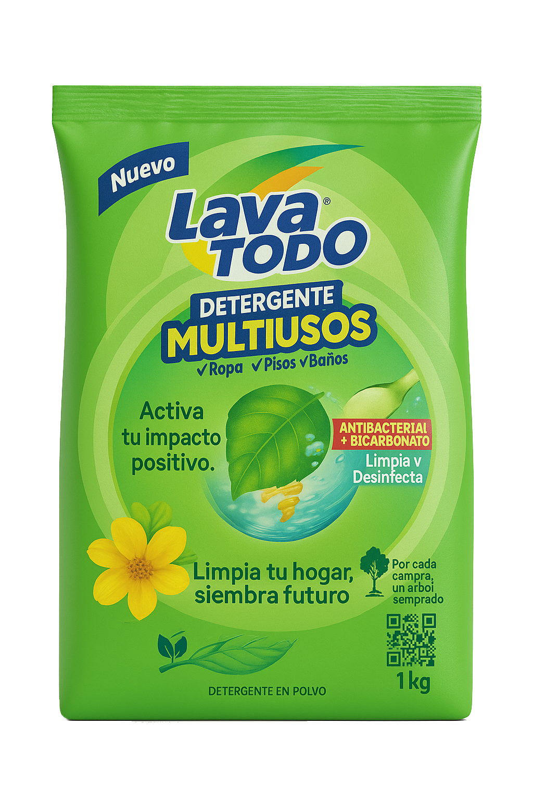

Un Gigante Ecuatoriano
Fundada en 1968, La Fabril se ha consolidado como un pilar de la industria nacional, exportando a más de 20 países. Su liderazgo no solo se mide en volumen, sino en su capacidad para dominar categorías clave del consumo masivo, demostrando su profunda conexión con los hogares ecuatorianos.
Liderazgo en Categorías Clave
Perfil del Consumidor Principal
El Corazón del Hogar
La Fabril se dirige a jefes de hogar de 25 a 45 años. Este público es pragmático y valora la calidad a un precio justo. Más importante aún, siente un fuerte orgullo por los productos ecuatorianos, lo que representa una conexión emocional que va más allá de la simple compra.
Innovación vs. Tradición
Frente a competidores como Danec y Unilever, La Fabril se diferencia por una estrategia dual: un portafolio de productos muy amplio y un firme compromiso con la innovación sostenible. Mientras otros compiten en precio o alcance, La Fabril apuesta por un futuro más verde como valor diferencial clave.
Paisaje Competitivo
Campaña "Huella Limpia": Objetivos Claros
La propuesta "Huella Limpia" busca traducir la visión sostenible de La Fabril en resultados medibles, conectando el acto cotidiano de lavar con un impacto ambiental positivo y tangible.
+5%
En Ventas
Incremento proyectado para Lavatodo Multiusos en el Q4 de 2025.
✓
Percepción de Marca
Fortalecer a La Fabril como líder en responsabilidad ambiental.
Estrategia Multicanal: Del Like a la Acción
La campaña integra medios digitales y físicos para guiar al consumidor en un viaje que va desde el descubrimiento en redes sociales hasta la participación activa en el proyecto de reforestación.
Redes Sociales
(IG, FB, TikTok)
(IG, FB, TikTok)
↓
QR en Empaque
(Punto de Venta)
(Punto de Venta)
↓
Landing Page
(Info. Reforestación)
(Info. Reforestación)
↓
Compra y Apoyo
(Siembra Futuro)
(Siembra Futuro)
El Futuro es Verde
La campaña "Huella Limpia" no termina con la venta. Cada compra contribuye a un proyecto de reforestación, proyectando un crecimiento tangible en el número de árboles plantados durante el último trimestre de 2025. Esto convierte a cada consumidor en un agente de cambio, sembrando un futuro más verde para todos.
Proyección de Reforestación (Q4 2025)
Más Allá del Producto: Impacto Social
La Fabril no solo produce bienes, sino que también invierte activamente en el bienestar de las comunidades. A través de programas de desarrollo local y alianzas estratégicas, generamos oportunidades y contribuimos al crecimiento sostenible de la sociedad ecuatoriana.
Inversión Social por Área (2024)
Concepto Creativo: "Huella Limpia"
La campaña "Huella Limpia" se basa en el insight de que "Lo Que Cuida A Mi Familia Debe Cuidar También Al Planeta". Su concepto central es "Cada lavado deja una huella. Hagamos que sea verde", y su slogan es "Limpia tu hogar, siembra futuro".
Envase de Lavatodo Multiusos que cambia de color con el sol, revelando una hoja como símbolo de impacto ambiental positivo.
Empaque Fotocrómico

Mockup: Redes Sociales
La campaña se difundirá a través de Reels y Stories en Instagram, un Challenge en TikTok y publicidad pagada en Facebook, con contenido diseñado para maximizar el engagement.
Post Estático (Instagram/Facebook)
"Lo que hoy brilla en tu cocina, mañana brillará en el bosque. #HuellaLimpia"
Reel (TikTok/Instagram)
Transición de limpieza a reforestación.
Mockup: Landing Page y QR
Un código QR en los empaques dirigirá a los consumidores a una landing page dedicada, con información detallada sobre el proyecto de reforestación y cómo su compra contribuye.
QR en Empaque

Escanea para sembrar futuro.
Landing Page (Diseño Simplificado)
Proyecto Reforestación
Descubre cómo tu Lavatodo ayuda a plantar árboles en Ecuador. ¡Únete a la #HuellaLimpia!
Sembrando el Mañana: Nuestra Visión
La Fabril se compromete a seguir liderando con innovación y responsabilidad. Nuestra visión a futuro se centra en expandir nuestro portafolio de productos sostenibles, fortalecer nuestras alianzas comunitarias y reducir aún más nuestra huella ambiental. Continuaremos siendo "La Industria de las Ideas", transformando el futuro con cada acción.
ÔøΩüí°üåç